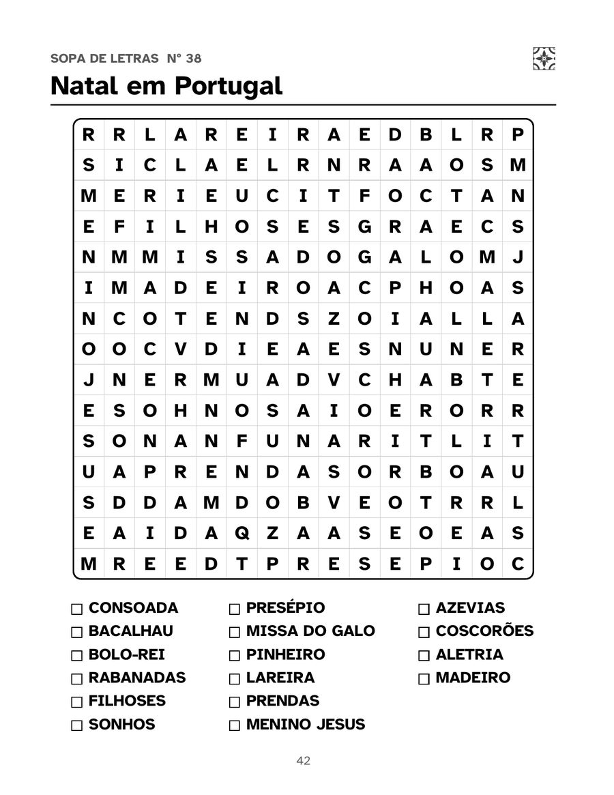
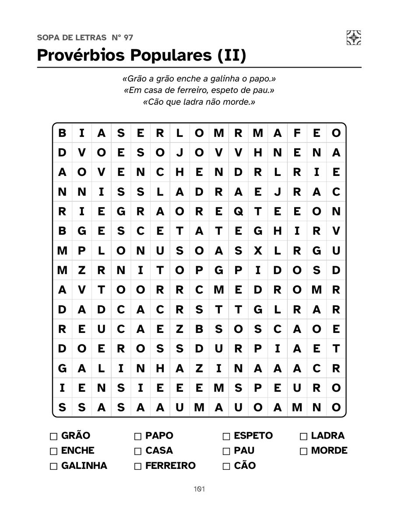
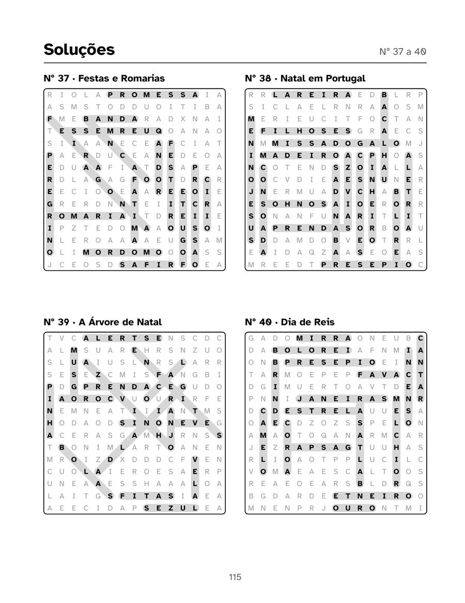

Português (Portugal)
Sopa de Letras em Letra Grande
100 puzzles sobre Portugal para adultos e seniores
100 sopas de letras em letra grande com palavras bem portuguesas: cidades e praias, fado e santos populares, doces conventuais, o mar, provérbios e o Natal em Portugal. Um puzzle por página, em português de Portugal.
PDF com 4 páginas do livro, pronto a imprimir. Amostras grátis para uso pessoal e em sala de aula.
132 páginas · 21,6 × 27,9 cm · capa mole · Edições Gacrux
O que tem o livro
- Letras da grelha com 18 pt ou mais, numa fonte pensada para quem vê mal
- Um puzzle por página, com grelhas de 15 × 15
- 100 temas e mais de 1500 palavras
- Nível acessível: quase tudo na horizontal e na vertical
- Todas as soluções no fim do livro
- Página para dedicatória
Veja por dentro
Toque numa página para a ver maior.





